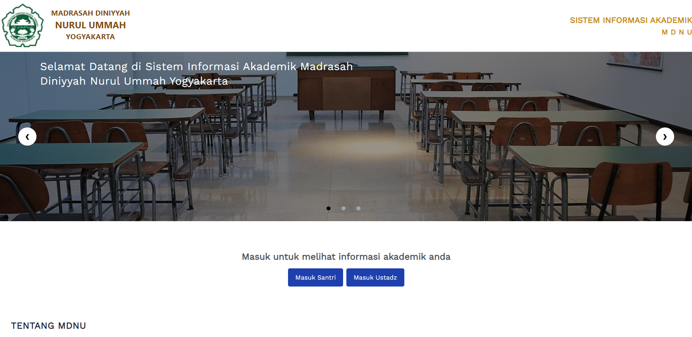
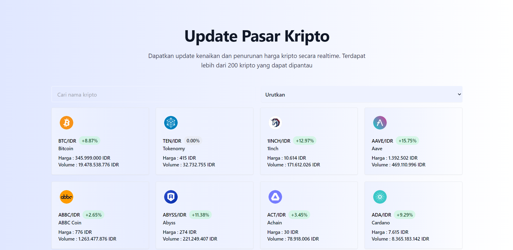
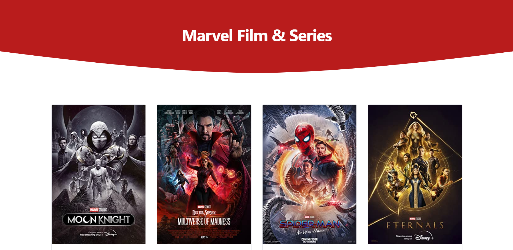

Tentang
Mahasiswa S1 Teknik Informatika Universitas Islam Negeri Sunan Kalijaga Yogyakarta.
Saya suka mempelajari hal-hal baru dan memecahkan masalah.
Saya tertarik pada situs web, ilmu data, blockchain dan saat ini sedang belajar tentang pengembangan web.
Curriculum Vitae
Keterampilan
Javascript
NodeJS
React
JQuery
PHP
Laravel
Portofolio
Sistem informasi Akademik MDNU

Proyek kerja praktek perguruan tinggi membuat sistem informasi akademik Pondok Pesantren Nurul Ummah Kotagede.
Sistem dibuat untuk admin, santri dan ustadz untuk mempermudah kegiatan administrasi di pondok pesantren yang dilakukan secara online
Kunjungi
Cek Resi

Situs web untuk melacak pengiriman 12 pengirim barang.
Masukkan resi pengiriman untuk dapat melacak informasi pengiriman, detail dan riwayat pengiriman
Kunjungi
Marvel Film & Series API

API yang menyediakan data film dan serial Marvel.
Ada sekitar 30+ data berupa judul, poster, trailer, tanggal rilis, durasi, genre, sutradara, aktor, plot, dan tautan unduhan melalui torrent
Kunjungi
Crypto Market

Situs web untuk memantau kenaikan dan penurunan harga crypto secara real time.
Ada lebih dari 200 cryptocurrency untuk dipantau
Kunjungi
Website Marvel Film & Series

Situs web yang menampilkan koleksi film dan serial Marvel
Kunjungi
Kontak